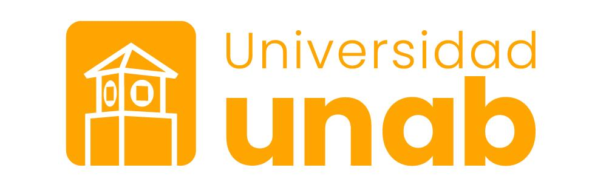

Conociendo los procesos de la Gestión Humana
Un recorrido visual e interactivo por los ocho procesos que sostienen la gestión del talento en las organizaciones, construido de manera colaborativa por estudiantes de Psicología.

Objetivo general
"Diseñar, de manera colaborativa, una página web que presente los principales procesos de la Gestión Humana, integrando fundamentos teóricos, recursos multimedia y ejemplos prácticos, con el fin de fortalecer la comprensión de la gestión del talento y las competencias del trabajo en equipo."
Este sitio es la respuesta a ese objetivo: cada uno de los ocho procesos cuenta con su propia sección, construida por un grupo responsable, que combina teoría, ejemplos aplicados y espacios preparados para recursos multimedia.
Fuente: Taller Evaluativo #1 — Conociendo los procesos de la Gestión Humana. Fundamento Campo de Aplicación Organizacional, Programa de Psicología, UNAB EXT UNISANGIL.
¿Qué es la Gestión Humana?
La Gestión Humana es el área de la organización encargada de administrar el talento de las personas que la conforman, desde su ingreso hasta su desarrollo y permanencia, en función de los objetivos institucionales y del bienestar de los colaboradores.
Gestión del talento
Reúne las prácticas orientadas a atraer, formar y retener a las personas que la organización necesita para cumplir su misión.
Trabajo en equipo
Fortalece las competencias de colaboración, comunicación y coordinación que sostienen el funcionamiento de los grupos de trabajo.
Mirada organizacional
Entiende a las personas como parte de un sistema mayor: estructura, cultura, clima y procesos que interactúan entre sí.
Mapa de navegación
Los ocho procesos de la Gestión Humana, organizados a partir del eje central. Selecciona cualquier tarjeta para entrar directamente a esa sección.
Los ocho procesos de la Gestión Humana
Cada proceso incluye definición, objetivos, características, subprocesos, ejemplos prácticos, recursos multimedia y referencias APA.
1. Las competencias
Definiciones, clasificación y modelos para determinar competencias.
2. Organizar personas
Estructura organizacional, diseño de cargos y evaluación del desempeño.
3. Integrar personas
Reclutamiento y selección del talento.
4. Recompensar personas
Remuneración, prestaciones e incentivos.
5. Desarrollar personas
Formación, desarrollo, aprendizaje y gestión del conocimiento.
6. Retener personas
Bienestar, higiene, seguridad y relaciones laborales.
7. Auditar personas
Banco de datos y sistemas de información administrativa.
8. Clima Laboral
Diagnóstico organizacional y dimensiones del clima.
Nuestro equipo
Estudiantes responsables de cada proceso, agrupados según su aporte al taller.
Las competencias
Proceso 1- Natalia Herrera
- Cielo Lombana
- Nicole Álvarez
- Geraldine Ortiz
Organizar personas
Proceso 2- Adriana Contreras
- Paula Delgado
- Eva Rodríguez
- Joysbed Vargas
Integrar personas
Proceso 3- Gabriela Torres
- Julieth Triana
Recompensar personas
Proceso 4- Karol Suárez
- Nicole Jiménez
- Lucila Aguirre
- Luisa Pico
Desarrollar personas
Proceso 5- Gabriela Torres
- Julieth Triana
Retener personas
Proceso 6- Karol Suárez
- Nicole Jiménez
- Lucila Aguirre
- Luisa Pico
Auditar personas
Proceso 7- Yanfred Vera
Clima Laboral
Proceso 8- Penélope Herreño
- Nicool Mejía
Criterios de evaluación
¿Listo para comenzar?
Recorre los ocho procesos de la Gestión Humana empezando por Las competencias.